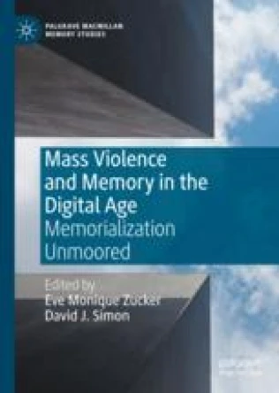
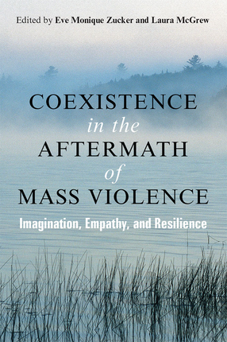
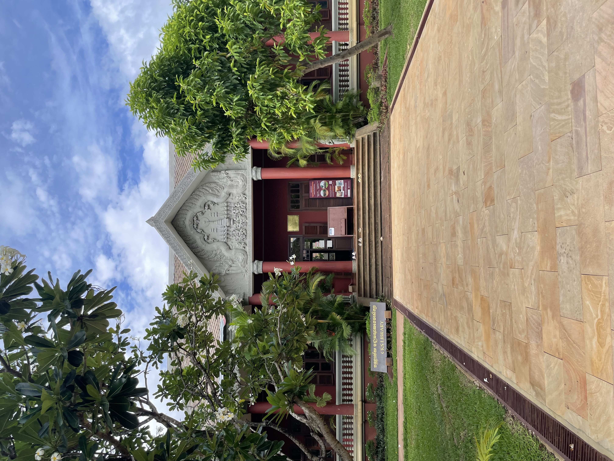
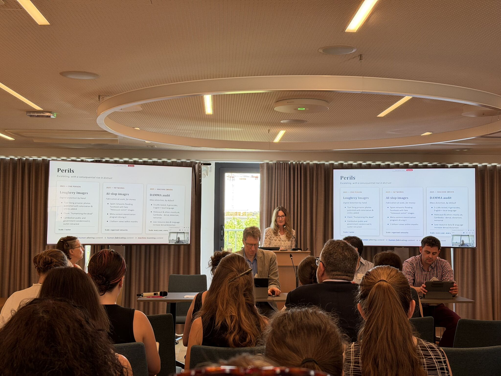

I'm a sociocultural anthropologist working on memory, mass violence, and their digital afterlives, with fieldwork in Cambodia and comparative work on the Holocaust. At Yale, I created and taught one of the earliest Digital Anthropology courses and co-founded the Digital Memorialization of Mass Atrocities course. I also lead a nonprofit supporting social science and humanities research on Cambodia and the Mekong region.
My research explores the moral, ritual, everyday, and digital forms of social memory and recovery following mass violence, through long-term fieldwork in Cambodia and comparative study of the Holocaust. I hold a PhD in anthropology from the London School of Economics and an MA in cultural anthropology from the University of Wisconsin–Madison. I'm affiliated with Yale's Council on Southeast Asian Studies, Department of Anthropology, and Genocide Studies Program, and I co-founded the Yale Genocide Program Digital Memorialization Initiative and the DAMMA (Digital Archive of Memorialization of Mass Atrocities) group. I also serve as President and CEO of the Center for Khmer Studies, an international nonprofit and American Overseas Research Center supporting social science and humanities research on Cambodia and the Mekong region.


As President and CEO, I lead an organization working across five continents and with 24+ partner institutions.
CKS runs renowned fellowship and grant programs, a library and research center at Wat Damnak in Siem Reap, and a second office in Phnom Penh — together supporting scholars, students, and cultural heritage work throughout Cambodia. CKS serves the local community through children's programs, community events, and our library.

